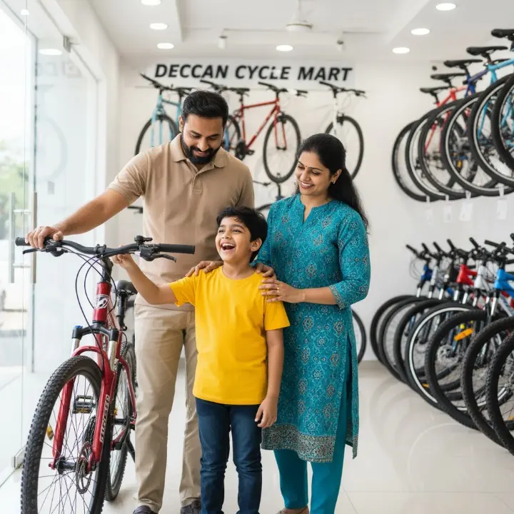
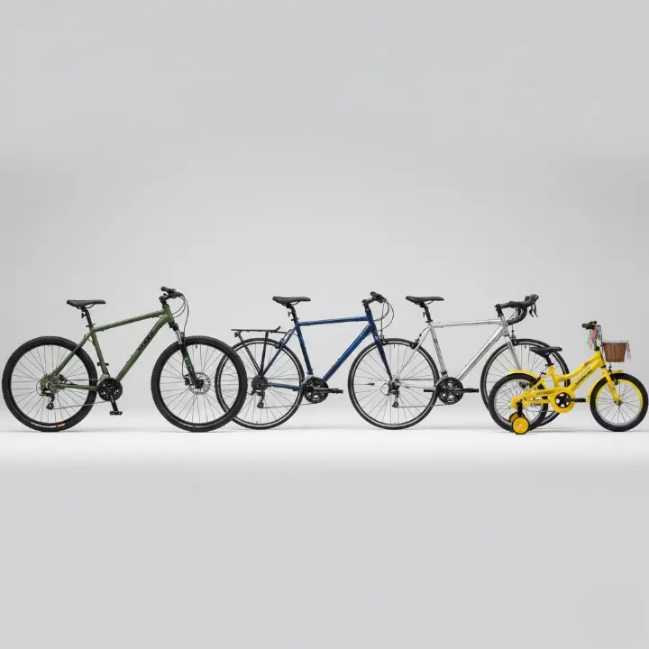
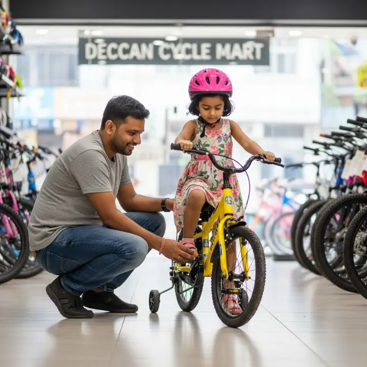
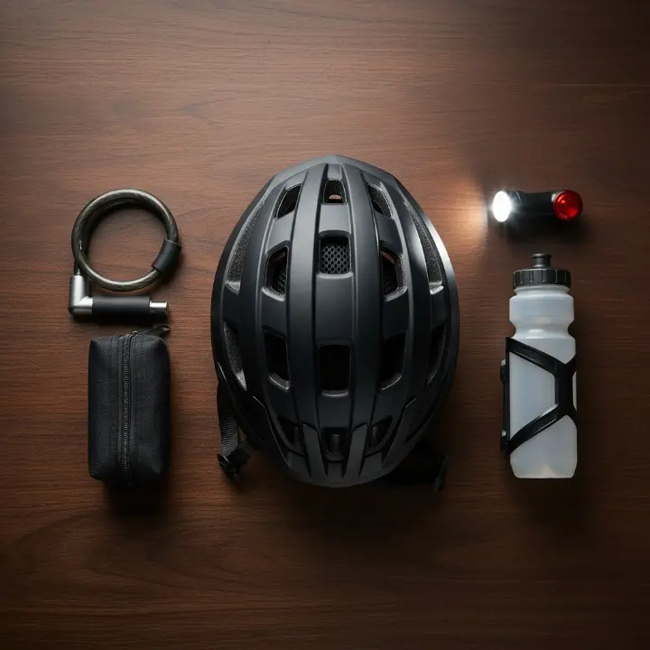
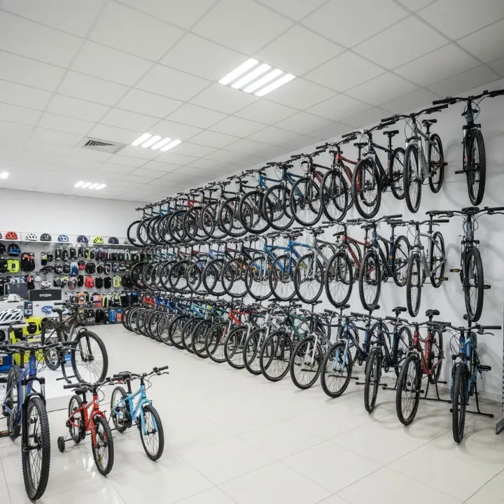
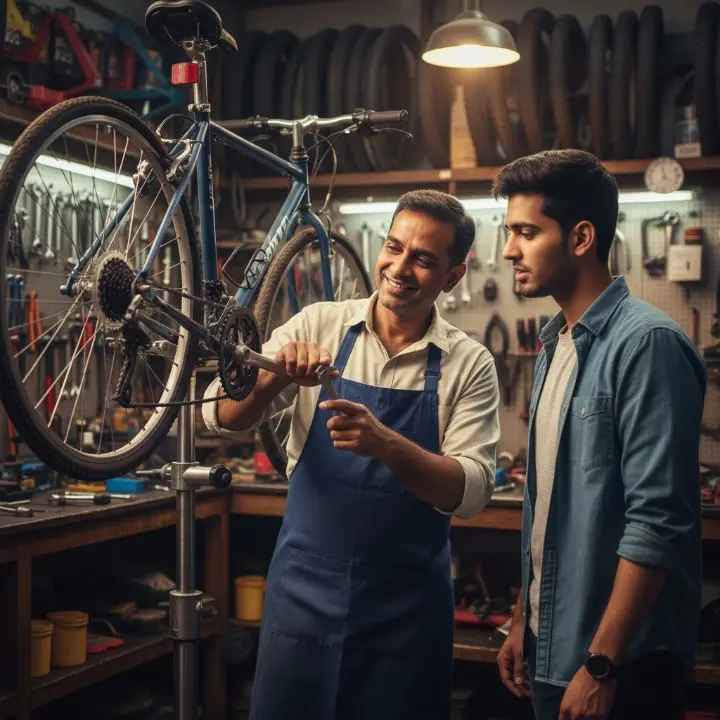

Buying a bicycle is not just about picking the first model you see. Whether you’re a parent buying your child’s first bike, a student commuting daily in Alwal, or a fitness enthusiast cycling through Kompally, the right cycle makes the journey smoother, safer, and more enjoyable.
The wrong choice, however, often leads to discomfort, extra repairs, or wasted money. That’s why we created this comprehensive Secunderabad Bicycle Buying Guide to help you make the best decision—backed by insights from Deccan Cycle Mart, trusted by local families since 1989.
In This Guide, You'll Learn:
- ✓ Which Type is For You: MTB, Hybrid, or Road Bike explained.
- ✓ The Perfect Size: How to choose the right frame and wheel size.
- ✓ Must-Have Gear: Essential accessories for safety and convenience.
- ✓ Top Brands & Budgets: Making a smart choice for your wallet.
- ✓ The Local Advantage: Why after-sales service is a game-changer.
🚲 1. Understanding the Different Types of Bicycles
The first step is matching the bicycle type to your primary use. Each category is designed for a specific terrain and purpose.
🚵 Mountain Bikes (MTB)
Best for: Fitness riders, adventure cyclists, and students navigating uneven terrains like the Kompally outskirts. MTBs are built to handle rough trails and bumps with ease.
Features: Sturdy frame, wide tires with deep treads, shock absorbers (suspension), and a wide range of gears for climbing hills.
Popular among: Young adults and fitness seekers in Secunderabad.
🚲 Hybrid Cycles
Best for: Everyday city commuting in areas like Kowkoor, Bollaram, Alwal, and Jonnabanda. They are the perfect all-rounders.
Features: A balance of an MTB's strength and a road cycle's speed. They typically offer a more comfortable, upright riding position.
Popular among: Students and office goers looking for a reliable daily ride.
🚴 Road Cycles
Best for: Speed and long-distance rides on paved roads. If you're serious about cycling for fitness, this is your category.
Features: Extremely lightweight frames, slim tires for minimal resistance, and an aerodynamic design that encourages a forward-leaning posture.
Popular among: Fitness-focused professionals and cycling enthusiasts.
Gear vs. Non-Gear
Geared cycles make it easier to tackle slopes and varied terrains, allowing for higher speeds. Non-geared cycles are simpler, more affordable, and require less maintenance, making them great for flat, predictable routes.
👉 Pro Tip: If your daily route involves mostly flat roads, a Hybrid is an excellent choice. If you expect rough patches or hills, an MTB offers more versatility.
📏 2. Choosing the Right Size Bicycle
This is one of the most common mistakes new buyers make. A poorly sized bicycle leads to bad posture, discomfort, and a higher risk of injury. Don't compromise on the fit!
Quick Sizing Guide
For children, sizing is based on wheel diameter, while for adults, it's about the frame size. Use this as a starting point:
- For Kids: Choose by wheel size (e.g., 14", 16", 20") based on their height. For a deep dive, read our complete guide on How to Choose the Perfect Kids’ Bicycle.
- For Adults: Use this frame size guide:
- Height 4’10” – 5’2”: 13–15 inch frame
- Height 5’3” – 5’6”: 15–17 inch frame
- Height 5’7” – 5’10”: 17–19 inch frame
- Height 5’11” – 6’1”: 19–21 inch frame
👉 At Deccan Cycle Mart, we believe a chart is just a guide. That's why every customer gets a personal fitting and a test ride to ensure the size feels natural and comfortable before purchase.
🛡️ 3. Must-Have Accessories for Every Rider
A bicycle is incomplete without the right accessories for safety, security, and convenience. Here are the essentials:
- 🛡️Helmet: Non-negotiable. Safety always comes first.
- 🔒Lock: A strong lock is a must for students and commuters parking their cycle publicly.
- 💡Lights: A white front light and a red rear light are crucial for anyone riding after dark.
- 🌧️Mudguards: Absolutely essential for navigating Secunderabad's roads during the monsoon season.
- 💧Bottle Holder: A simple but vital accessory for fitness riders and long-distance commuters.
- 🎉For Kids: Don't forget training wheels for beginners, plus fun add-ons like baskets and streamers!
👉 Many people search for "cycle accessories near me in Secunderabad". We keep all these essentials in-stock and ready for you.
💰 4. Brand Choices & Budget Planning
There is no single "best brand." The right choice depends entirely on your needs and budget. A kids' bike has different priorities than a premium road cycle for a serious athlete.
Budget Planning
Buying a cycle is an investment in your health and mobility. Here’s a general idea of what to expect:
- Kids’ Cycles: ₹3,000 – ₹8,000
- Teen/College Bikes: ₹7,000 – ₹15,000
- Entry-level MTB/Hybrid: ₹10,000 – ₹20,000
- Premium Road Cycles: ₹20,000+
👉 Spending a little extra on a quality brand often saves a lot of money on future repairs. At Deccan Cycle Mart, the difference isn't just the brand, but the after-sales support—free pickup/drop for service, exchange offers, and expert advice you can always count on.
🤝 5. Why Local Riders Trust Deccan Cycle Mart
Why have families across Secunderabad trusted us for over 30 years? Because we provide value that online stores and big-box retailers can't match.
- 🚚Free Pickup & Drop Service: We save parents time. Learn more about our Expert Cycle Repair & Maintenance in Secunderabad.
- 🔄Generous Exchange Offers: Kids outgrow cycles fast. Our exchange program makes upgrading easy and affordable.
- 🔧On-the-Spot Repairs: No long waiting periods. We get you back on the road quickly.
- 🗺️True Local Expertise: We know the roads in Bollaram, Kowkoor, and Kompally. We give advice that’s relevant to you.
✅ 6. Quick Buyer’s Checklist
Before you make your final decision, run through this simple checklist:
- ✓ Purpose: Fitness / Commute / Kids / Long rides?
- ✓ Type: Have you chosen between MTB / Hybrid / Road?
- ✓ Size: Does the frame and wheel size feel right?
- ✓ Budget: Have you shortlisted options in your price range?
- ✓ Accessories: Did you add the essential gear?
- ✓ Service: Have you asked about warranty and after-sales support?
Read More From Our Blog
How to Choose the Perfect Kids’ Bicycle
Our complete guide for parents on finding the safest and best-fitting bike for your child in Secunderabad.
Expert Cycle Repair & Maintenance
Learn about our hassle-free pickup and drop service for all your cycle repair needs in the Secunderabad area.